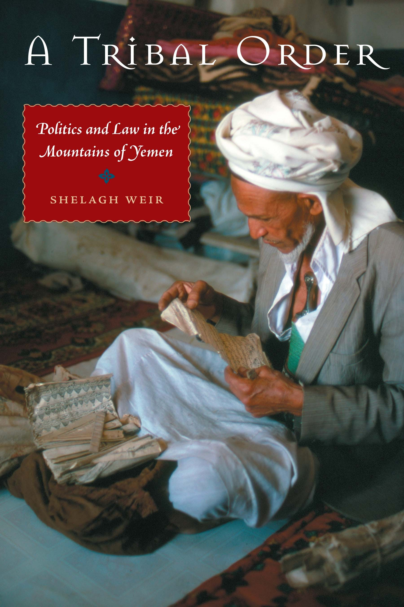
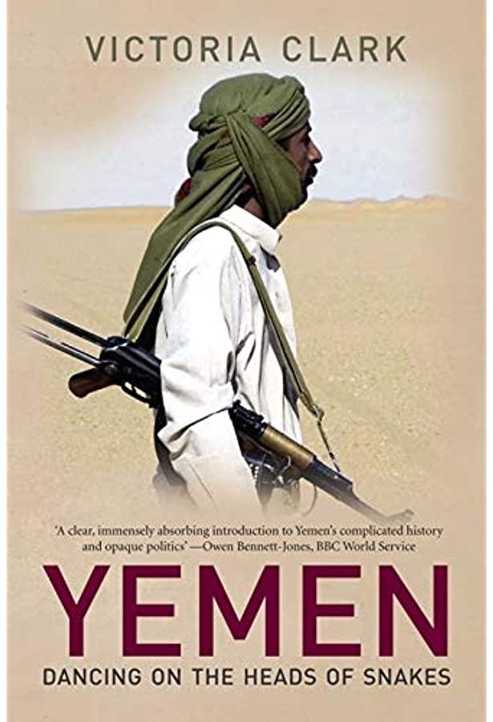
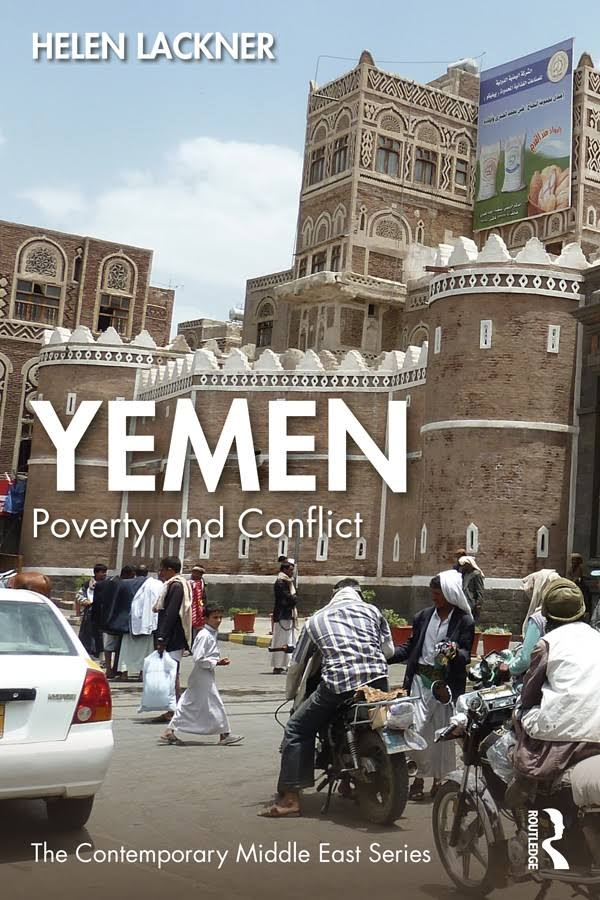
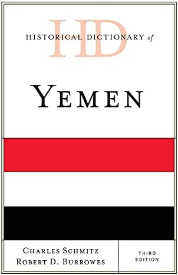

This is a regularly updated list on resources related to the conflict in Yemen, along with some personal thoughts on each. I am not a professional researcher; I’m just a person who wants to help others understand the war better.
What’s Happening in Yemen?
I’m currently working on a post that goes into more details about specifically what led to the war in 2015, which I’ll link to when it’s completed. This is a conflict that takes a while to explain properly, and I want to make sure everything is sourced properly. It’s not something that can be explained in a few sentences.
Book Recommendations
To reiterate; I am not a professional researcher. These are just my opinions on which books I found were most useful in understanding the conflict.
Yemen in Crisis
Helen Lackner has been a political writer for more than 40 years, has lived in Yemen for 15+ years, has written reports for the United Nations, and currently sits on the EU Council on Foreign Affairs. She has written 9 books in total, the majority of them on Yemen. She is, in my opinion, the absolute best resource for information on Yemen, and Yemen in Crisis is her best work in terms of understanding the current conflict.
The book starts by dissecting the 2011 ‘Arab Spring’ protests that ultimately led to the overthrow of former late president Ali Abdullah Saleh, explaining the Gulf Cooperation Council’s failure to peacefully transition power, the rise of the Houthi/Saleh alliance, and the subsequent humanitarian disaster brought on by the Saudi-led coalition invasion in March 2015. Each chapter describes a different aspect of the conflict, such as the water crisis, the role of tribes in the country, and the Southern separatist movement. The book is loaded with information; I often found myself re-reading sections just to make sure I understood everything correctly. As a whole, though, the chapters are brief enough to where they don’t feel too overwhelming while still giving enough details that
Besides that, the book is written well, there’s some personal anecdotes throw in there, and it’s overall extremely informative. If you read this book, you’ll know more than 99% of people in the United States about this conflict, so it gets my highest recommendation.
Yemen Endures
This book is a bit different than the others listed here. Ginny Hill is a London journalist who has written about Yemen for over a decade. This book is mostly a diary of her time living there during the early 2000s, interlaced with an overall commentary on what led up to the March 2015 war. The book contains some personal accounts of political events, a lot of interviews, and many chapters covering a wide array of topics, such as weapon smuggling, refugees, and culture. It’s a very all-encompassing read, and Hill ties all these topics together in order to give a somewhat personal explanation of what led to the current conflict.
Because the book covers so many different topics, it might not be the best book to start off with. It’s very easy to forget acronyms and mix up people’s positions/names. If you have a stronger grasp on the conflict already, though, it’s a great read.
A History of Modern Yemen
Paul Dresch is a professor at the University of Oxford, and has written a total of three books about Yemen. Similar to the last book, I would not recommend reading this unless you already have a decent understanding of Yemen, but assuming you do, it’s a really great book for several different reasons.
This book starts from 1906, and provides a brief yet very dense description of Yemen all the way up to 2000. It concludes
Destroying Yemen
Isa Blumi is an
A Tribal Order

This book is interesting. Shelagh Weir is a researcher, and this book describes her 1970s anthropology field research in the northern mountains of Jabal Razih, near the Saudi border. This is the same region that the Houthi tribe would later emerge from. The book provides a ton of data, charts, maps, giving an extremely detailed breakdown of how tribes function. If you’re interested in anthropology in general, it’s a fascinating read.
Is it really relevant to understanding Yemen in the 2010s? In some ways, yes. Tribes are massively influential in the country, and understanding how they work is important to understanding the conflict. Tribes behave differently depending on region, and have also changed over time, but there’s still enough overlap that this book will still be very informative. With that said, you can probably skip a lot of the sections that talk about culture. If you just want the bare essentials, I’d at least read the last three chapters that discuss how tribes interact with government, which is a topic that isn’t discussed in many other books.
Dancing on the Heads of Snakes

Ruling Yemen is hard […] I always say it’s like dancing on the heads of snakes.
- Ali Abdullah Saleh, 2008
Shelagh Weir, who wrote the previously mentioned book, A Tribal Order, wrote a review on this book that you can find here. It does a good job highlighting what the books does well, while still criuiqing the problems with it.
Helen Lackner is a French political writer for more than 40 years, had previously lived in Yemen for 15 years, has written reports for the United Nations, and now sits on the EU Council on Foreign Affairs. She has written 9 books in total, most of them on Yemen, with the first written in 1978. She is - in my opinion - the absolute best resource for information on Yemen, and Yemen in Crisis is her best work.
This book currently has five different editions, with the most recent titled Road to War. If you want to know what exactly led to the 2015 Saudi-intervention, read this book. Every page is stuffed with information, and each chapter tackles a different aspect of the conflict. This book currently has five different editions, with the most recent titled Road to War. If you want to know what exactly led to the 2015 Saudi-intervention, read this book. Every page is stuffed with information, and each chapter tackles a different aspect of the conflict. This book currently has five different editions, with the most recent titled Road to War. If you want to know what exactly led to the 2015 Saudi-intervention, read this book. Every page is stuffed with information, and each chapter tackles a different aspect of the conflict. This book currently has five different editions, with the most recent titled Road to War. If you want to know what exactly led to the 2015 Saudi-intervention, read this book. Every page is stuffed with information, and each chapter tackles a different aspect of the conflict.
This book currently has five different editions, with the most recent titled Road to War. If you want to know what exactly led to the 2015 Saudi-intervention, read this book. Every page is stuffed with information, and each chapter tackles a different aspect of the conflict.
Yemen and the Politics of Poermanent Crisis
As you learn more and more about Yemen, you will quickly understand that Saleh was an extremely corrupt individual who managed to rule a deeply unstable country for almost four decades. You might even know that he rose to power following a nine month span that saw a total of three Yemeni presidents assassinated. How did this man manage to survive such a volatile environment?
Sarah Phillips, a professor at the University of Sydney, provides the details. She describes how Saleh was able to create a military security state that rewarded their patrons enough to satisfy them, but not enough for them to build a proper resistance. When resistance did occur, he would maneuver it by pitting rivals against each other. By positioning himself as the glue holding the country together, he was able to win support from Western and Middle Eastern powers for decades (also by letting those countries exploit Yemen’s workforce and natural resources).
This book is only about 150 pages long and it’s very simple and straight to the point. Most books will only allude to Saleh’s corruption, but few offer a breakdown of the system he created. It’s a great read for understanding Yemen, and it’s also useful for understanding how dictatorships operate in general.
Yemen: Poverty and Conflict

Some more work by Helen Lackner. This one is more recent, written in July 2022.
This war has claimed the lives of hundreds of thousands of lives, the majority being children. Most of this the direct result of poverty, not weapons. This is
Don’t Be Afraid of the Bullets
Helen Lackner is a French political writer for more than 40 years, had previously lived in Yemen for 15 years, has written reports for the United Nations, and now sits on the EU Council on Foreign Affairs. She has written 9 books in total, most of them on Yemen, with the first written in 1978. She is - in my opinion - the absolute best resource for information on Yemen, and Yemen in Crisis is her best work.
This book currently has five different editions, with the most recent titled Road to War. If you want to know what exactly led to the 2015 Saudi-intervention, read this book. Every page is stuffed with information, and each chapter tackles a different aspect of the conflict. This book currently has five different editions, with the most recent titled Road to War. If you want to know what exactly led to the 2015 Saudi-intervention, read this book. Every page is stuffed with information, and each chapter tackles a different aspect of the conflict. This book currently has five different editions, with the most recent titled Road to War. If you want to know what exactly led to the 2015 Saudi-intervention, read this book. Every page is stuffed with information, and each chapter tackles a different aspect of the conflict. This book currently has five different editions, with the most recent titled Road to War. If you want to know what exactly led to the 2015 Saudi-intervention, read this book. Every page is stuffed with information, and each chapter tackles a different aspect of the conflict.
This book currently has five different editions, with the most recent titled Road to War. If you want to know what exactly led to the 2015 Saudi-intervention, read this book. Every page is stuffed with information, and each chapter tackles a different aspect of the conflict.
The Huthi Movement in Yemen
Helen Lackner is a French political writer for more than 40 years, had previously lived in Yemen for 15 years, has written reports for the United Nations, and now sits on the EU Council on Foreign Affairs. She has written 9 books in total, most of them on Yemen, with the first written in 1978. She is - in my opinion - the absolute best resource for information on Yemen, and Yemen in Crisis is her best work.
This book currently has five different editions, with the most recent titled Road to War. If you want to know what exactly led to the 2015 Saudi-intervention, read this book. Every page is stuffed with information, and each chapter tackles a different aspect of the conflict. This book currently has five different editions, with the most recent titled Road to War. If you want to know what exactly led to the 2015 Saudi-intervention, read this book. Every page is stuffed with information, and each chapter tackles a different aspect of the conflict. This book currently has five different editions, with the most recent titled Road to War. If you want to know what exactly led to the 2015 Saudi-intervention, read this book. Every page is stuffed with information, and each chapter tackles a different aspect of the conflict. This book currently has five different editions, with the most recent titled Road to War. If you want to know what exactly led to the 2015 Saudi-intervention, read this book. Every page is stuffed with information, and each chapter tackles a different aspect of the conflict.
This book currently has five different editions, with the most recent titled Road to War. If you want to know what exactly led to the 2015 Saudi-intervention, read this book. Every page is stuffed with information, and each chapter tackles a different aspect of the conflict.
Historical Dictionary of Yemen

The Historical Dictionaries are a series of books that tries to explain the basic history of each country. There available for a ton of different countries, though they differ significant in quality. A few of the books are written by single authors, and some aren’t even written by historians.
Luckily, that isn’t the case with this edition. Both the authors have studied Yemen for decades, and it shows because this book is stuffed with information. If you’ve read the previous books, a good chunk of this one will be repeated information, but I still learned some new information, though I’m not sure if any of it pertains to this current conflict. Also, even though it is very informative, it’s extremely dry. Read it if you want, but there are better options.
Informative Videos
I would really, really recommend that you read at least one of the books above before diving into the videos. None of them provide any breakdown of the war, and should be considered more complimentary than anything. However, I know 99% of people will prefer YouTube to reading, so here are the best ones.
Documentaries
Yemen’s Dirty War
Produced by Deutsche Welle.
I don’t think this documentary does a good job explaining the causes of war (to be fair, I don’t think that at all ), but it’s still extremely informative and powerful to watch. I had to take a few breaks just to finish this video; it is hard to watch, but it deserves viewing.
Yemen: The North-Side Divide
Produced by Al Jazeera.
There’s not much attention given to the Southern Issue in Yemen, let alone much of an analysis. Most books will devote a chapter at most to Southerners, so this is a good documentary to fill those gaps.
Hunger Ward
Produced independent; directed by Skye Fitzgerald.
The movie follows two Yemeni doctors working at one of the busiest treatment centers in the country doing everything they can to mitigate the ongoing famine, which is disproportionately effecting children. Like the DW documentary earlier, this is a hard watch, and not really meant to explain the war, so it’s not essential viewing. With that said, considering this film is showing quite literally how most Yemeni have died from this conflict, it has my recommendation.
You need a Paramount+ subscription to watch this (legally).